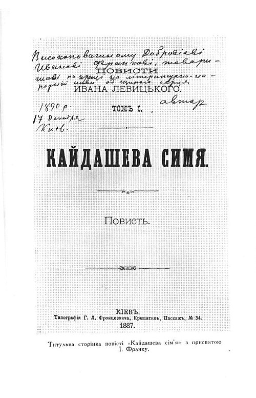

Головна |
Каталог книг |
Про нас |
Контакти |
Віртуальні полиці |
Каталог книг
Художня література — це не просто історії, це емоції, досвід і фантазії, які залишаються з нами надовго.
Наукова література дозволяє нам вивчати світ, розвиватися та відкривати нові горизонти.

Жанри книг
- Художня
- Наукова
- Дитяча
- Історична
Меню фільтрації книг
Кайдашева сім'я — Іван Нечуй-Левицький
Коротка історія часу — Стівен Гокінг
Колобок — Народні казки
Чорна рада — Пантелеймон Куліш
Тіні забутих предків — Михайло Коцюбинський
- Українська класика
- Світова література
- Фентезі
- Бестселери
- Книги, які читають усі
- Новинки
- Нещодавно видані твори